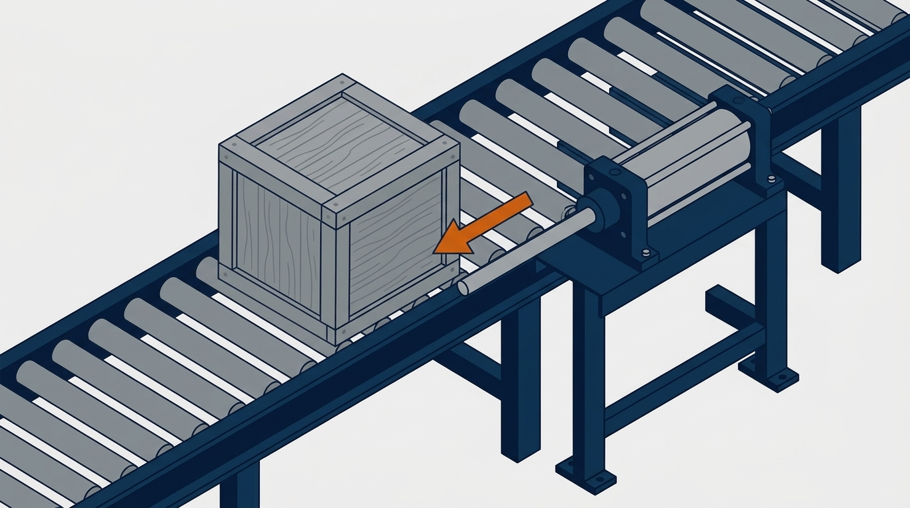

エアシリンダを選ぶとき、「とりあえずφ40」「前の設備と同じ」で決めていないでしょうか。本記事では、エアシリンダの選定計算の方法を、計算例つきで解説します。推力と負荷率からボア径（チューブの内径）を決め、ストロークの終わりで止めるときの衝撃まで確かめます。
後半には、ボア径を選ぶと、押す力・引く力と、ローラーの上で動かせるワークの重さの目安が変わる計算ツールと、ボア径を選んでワークを運ぶゲームがあります。数値はすべて説明用の例で、一般論にとどまる値には「要確認」と記しています。
計算例の適用範囲
- 本記事は、エアシリンダの選定の基本的な計算方法を説明するものです。選定の可否を保証するものではありません
- 負荷率の目安、クッションの吸収量、ロッドの径などは、メーカーや機種で違います。実際の選定では、使うシリンダのカタログと、メーカーの選定ツールで確かめてください
- 加速に必要な力、配管での圧力の落ち、横向きの力、くり返しによる摩耗は、必要に応じて別に確かめてください
この記事でわかること
- エアシリンダの推力の求め方（押す側と引く側の違い）
- 負荷率の決め方と、ボア径の選び方
- ストロークの終わりの衝撃（運動エネルギー）の確かめ方
- ボア径から、ローラーの上で動かせるワークの重さが分かる計算ツール
- ボア径を選んで、ワークをつかんで運ぶゲーム
エアシリンダの選定計算の流れ
エアシリンダの選定は、次の4つの順で進めます。多くの解説は①②で終わりますが、トラブルが起きやすいのは③④です。
この章のまとめ
- 選定は、力 → ボア径 → 衝撃 → 横向きの力と空気の量の順で進める
- 推力だけでなく、止めるときの衝撃まで確かめる
エアシリンダの推力の計算｜押す側と引く側で違う
エアシリンダの推力は、空気の圧力に、ピストンが圧力を受ける面積を掛けて求めます。押す側（ロッドが出る向き）は、ピストン全体の面積で受けます。引く側（ロッドが戻る向き）は、ロッドの分だけ面積が小さくなるため、引く力は押す力より小さくなります。
押す力 F ＝ P × π × D² ÷ 4
引く力 F ＝ P × π ×（D² − d²）÷ 4
P：シリンダにかかる圧力（MPa ＝ N/mm²）、D：ボア径（mm）、d：ロッドの径（mm）
この式で求まるのは理論推力です。実際の推力は、シリンダの中の摺動の抵抗、配管やバルブでの圧力の落ち、排気側に残る圧力（背圧）の分だけ小さくなります。
使用圧力は、工場の配管の圧力をそのまま使わず、シリンダが動いているときに、シリンダの近くで確保できる圧力で計算します。あるメーカーの技術資料では、減圧弁で空気源の圧力の85％程度に設定するのが一般的としています。ただし、圧力の落ち方は、配管の太さと長さ、継手やバルブ、同時に使う空気の量で変わります。一律に15％下がるとは考えず、実機で測って確かめます（要確認）。
使用圧力0.5MPaでの理論推力は、次のとおりです。ロッドの径は、あるメーカーの標準的なシリーズの例です。ロッドの径は、メーカーやシリーズ、仕様で違うため、使う機種のカタログで確かめてください（要確認）。
| ボア径 | ロッドの径 | 押す力 | 引く力 |
|---|---|---|---|
| φ16 | φ6 | 101 N | 86 N |
| φ20 | φ8 | 157 N | 132 N |
| φ25 | φ10 | 245 N | 206 N |
| φ32 | φ12 | 402 N | 346 N |
| φ40 | φ16 | 628 N | 528 N |
| φ50 | φ20 | 982 N | 825 N |
| φ63 | φ20 | 1,559 N | 1,402 N |
| φ80 | φ25 | 2,513 N | 2,268 N |
| φ100 | φ30 | 3,927 N | 3,574 N |
これは理論値で、負荷率や実際の使用圧力を反映した値ではありません。実際の推力との差を見込むのが、次の負荷率です。
この章のまとめ
- 推力は、使用圧力×受圧面積。引く側はロッドの分だけ小さい
- 使用圧力は、元の圧力の85％程度で計算する
- 表の推力は理論値。実際はもっと小さい
負荷率の決め方と、ボア径の選び方
負荷率は、シリンダの理論推力のうち、実際の負荷に使ってよい割合です。必要な推力は、負荷を負荷率で割って求めます。
必要な推力 ＝ 負荷（N）÷ 負荷率 η
必要な受圧面積 ＝ 必要な推力 ÷ 使用圧力
負荷率の目安は、メーカーの選定資料に従います。ある1社の技術資料では、次のようにしています（メーカー・動作の条件で違う・要確認）。
| 使い方 | 負荷率の目安 |
|---|---|
| 止めて押す作業（クランプ、低速のかしめなど） | 0.7以下 |
| ガイドに乗せた負荷を、水平に動かす | 1以下 |
| 負荷を垂直〜水平に動かす | 0.5以下 |
これは1社の目安で、すべてのシリンダに共通の決まりではありません。負荷率1は、理論推力と負荷が同じで余裕がない状態です。負荷は、重力、摩擦、加速に必要な力から、動かす向きごとに求め、実際の使用圧力での推力と比べます。速く動かしたい場合や、起動と停止をひんぱんにくり返す場合は、負荷率をさらに下げ、慣性の力と止めるときの衝撃も別に確かめます。負荷率に余裕がないと、動き出しが遅い、途中で止まる、速度がばらつく、といったことが起きます。水平で、押すときも引くときも同じ負荷なら、力の小さい引く側で選びます。押すときと引くときで負荷が違う場合は、それぞれの向きで計算します。
計算例1：30kgのワークを垂直に持ち上げる
使用圧力0.5MPa、負荷率0.5、押す側で持ち上げるとします。
負荷 30 × 9.81 ＝ 294 N
必要な推力 294 ÷ 0.5 ＝ 588 N
必要な受圧面積 588 ÷ 0.5 ＝ 1,177 mm² → ボア径 約38.7 mm
φ40を選ぶ（押す力628N、負荷率47％）
ここでは重力だけを負荷としました。垂直に持ち上げる場合は、ほかに次のことも確かめます（要確認）。
- シリンダの摺動の抵抗と、動いているときの圧力の落ち
- 動き出しと止まるときの、加速の力
- 下げるときの速度の制御
- 停電、空気の圧力の低下、配管の破損のときの落下防止。シリンダだけで重さを保てるとは限らないため、落ちると危険な装置では、機械的なロックやブレーキなどを考えます
計算例2：ローラーの上の100kgのワークを、水平に押す
ワークの下がローラー（ころ）なら、動かすのに必要な力は、重さそのものではなく、ころがりの抵抗です。抵抗の係数 μ は、ローラーの径や軸受、ワークの底面、ローラーの状態、重さの偏りで変わります。ここでは計算例として0.1と仮定します。実際は、実機で測った値や設備の仕様を優先してください（仮の値・要確認）。使用圧力0.5MPa、負荷率0.5とします。
動かすのに必要な力 0.1 × 100 × 9.81 ＝ 98 N
必要な推力 98 ÷ 0.5 ＝ 196 N
必要な受圧面積 196 ÷ 0.5 ＝ 392 mm² → ボア径 約22.3 mm
φ25を選ぶ（押す力245N で負荷率40％、引く力206N で負荷率48％）
動き始めの力、加速の力、ワークの位置ずれや引っかかりは、この計算に含めていないので、別に確かめます。そのうえで、ローラーの上なら、φ25でも100kgを動かせる計算になります。逆にいえば、細いシリンダでも、重いワークが動いてしまうということです。重いワークが動くほど、次の章の「止めるときの衝撃」が大きくなります。
この章のまとめ
- 必要な推力は、負荷÷負荷率。動かす作業の負荷率の目安は0.5以下
- 押すときも引くときも同じ負荷なら、引く側で選ぶ
- ローラーの上では、細いシリンダでも重いワークが動く
ストロークの終わりの衝撃｜運動エネルギーとクッション
シリンダで動かしたワークを、ストロークの終わりで止めるとき、ワークの運動エネルギーをどこかで受け止めなければなりません。外にストッパーがなければ、シリンダの中のピストンがふたに当たって止まります。この衝撃をやわらげるのが、シリンダのクッション（ゴムのクッションや、空気のクッション）です。
運動エネルギー E ＝ m × v² ÷ 2
m：ワークの質量（kg）、v：ストロークの終わりの速度（m/s）
この値を、使うシリンダのカタログにあるクッションの吸収量（許容運動エネルギー）と比べます。吸収量は、シリーズ、ボア径、クッションの種類（ゴムか空気か）で決まっています。質量 m には、ワークだけでなく、ピストンやロッドなどシリンダの動く部分の質量も含めます。
計算例2の続き：100kgを300mm/sで止める
E ＝ 100 × 0.3² ÷ 2 ＝ 4.5 J
ある1社のカタログでは、φ25のクッションの吸収量は、シリーズとクッションの種類によって、およそ0.1〜0.8Jでした。ここでは0.4Jと仮定します（機種で違う・要確認）。4.5Jは、その10倍以上です。推力は足りているのに、止めることができないという状態です。
対策は、次の3つです。
- 速度を落とす：0.4Jで止められる速度は、v ＝ √（2 × 0.4 ÷ 100）＝ 約0.089 m/s、つまり約89mm/sです（シリンダの動く部分の質量を入れると、もう少し遅くなります）
- 外にショックアブソーバを付ける：ワークのエネルギーを、シリンダではなく外の装置で受け止めます
- クッションの仕様を変える：空気のクッション付きなど、吸収量の大きい仕様やシリーズに変えます。ボア径を上げると吸収量が増える機種もありますが、それだけで解決するとは限らないので、カタログの値で確かめます
この章のまとめ
- ストロークの終わりでは、ワークの運動エネルギーを受け止める必要がある
- 運動エネルギーは速度の2乗に比例する。速度を上げると急に厳しくなる
- クッションの吸収量を超えるなら、速度を落とすか、外にショックアブソーバを付ける
自分の条件で試す｜エアシリンダの選定計算ツール（概算）
ボア径を選ぶと、押す力・引く力と、ローラーの上で動かせるワークの重さの目安が変わります。勘違いが起きないよう、条件は「ワークの下がローラーで、水平に動かす場合」に限っています。初期値は、本記事の計算例2と同じです。
ローラーの上のワークを、エアシリンダで水平に動かす
条件は、ワークの下がローラー（ころ）で、水平に押す・引く場合に限ります。持ち上げる（垂直）使い方や、床の上を引きずる使い方には使えません。ローラーの抵抗の係数は、計算例として仮定した値です（実機で測った値を優先してください）。推力は理論値（圧力×受圧面積）で、ロッドの径は、あるメーカーの標準的なシリーズの例です。負荷率の目安は、ある1社の技術資料の値です。クッションの吸収量は、使うシリンダのカタログの値を入れてください。運動エネルギーには、シリンダの動く部分の質量を含めていません。加速に必要な力、配管の圧力の落ち、横向きの力は計算に含みません。結果は選定の可否を保証するものではありません。実際の選定では、メーカーのカタログと選定ツールで確かめてください。
シリンダのボア径（内径）
動かす向き
ボア径を変えると、押す力・引く力と、動かせるワークの重さの目安が変わります。
条件
負荷率の目安（メーカーの技術資料による）
結果
| 押す力 ／ 引く力（理論） | N ／ N |
|---|---|
| 動かせる重さの目安（押す ／ 引く） | kg ／ kg |
| 実際のワークを動かす力 | N |
| 負荷率（選んだ向き） | ％ |
| ストロークの終わりの運動エネルギー | J |
| クッションで止められる速度の目安 | mm/s |
実際の設備での計算・選定の確認は、オンラインでお引き受けします（全国対応）。料金の目安相談する ›
やってみよう｜ボア径を選んで、ワークを運ぶゲーム
縦のシリンダでワークを持ち上げ、横のシリンダで右の置き場まで運びます。選べるのは、2本のシリンダのボア径だけです。ワークの重さは、毎回変わります。小さすぎても、大きすぎてもうまくいきません。
ボア径選びゲーム
今回のワークの重さ： kg
縦のシリンダ（持ち上げる）のボア径
横のシリンダ（運ぶ）のボア径
ゲームの判定は、使用圧力0.5MPaの理論推力と負荷率で決めています。縦は「ワーク＋爪3kg」の重さ、横は「ワーク＋台車15kg」をレールの抵抗の係数0.15で動かす力で判定します。負荷率が80％を超えると動かせず、縦は10％未満、横は8％未満だと「大きすぎ」としています。大きすぎると勢いがついて止めるときの衝撃で落ちる、というのは分かりやすくするための演出で、実際の装置では速度の調整やクッションで防げます。
横向きの力と、空気の消費量
ロッドに横向きの力をかけない
エアシリンダのロッドは、まっすぐ押し引きするための部品で、横向きの力には弱くできています。ワークの重さをロッドで支えたり、ワークの向きがずれたまま押したりすると、ロッドやシリンダの中の部品が早く摩耗します。横向きの力がかかる場合は、ガイドを付けて、ガイドで重さを受けます。許される横向きの力は、カタログで確かめます。ストロークが長い場合は、ロッドの座屈も確かめます。
空気の消費量を見積もる
シリンダを増やすときは、工場のコンプレッサに余裕があるかも確かめます。メーカーの技術資料では、1往復あたりの空気の消費量（大気圧に換算した体積）を、次の式で求めます。
押す側 q1 ＝ 押す側の受圧面積 × ストローク ×（P ＋ 0.1）÷ 0.1 × 10⁻⁶
引く側 q2 ＝ 引く側の受圧面積 × ストローク ×（P ＋ 0.1）÷ 0.1 × 10⁻⁶
1往復の消費量 q ＝ q1 ＋ q2
（面積は mm²、ストロークは mm、P はゲージ圧力 MPa、0.1 は大気圧の分。単位は dm³、つまりリットル。配管の分は別に足す）
φ25（ロッドφ10）、ストローク200mm、0.5MPaなら、押す側が約0.59リットル、引く側が約0.50リットルで、1往復で約1.08リットルです。1分間に10往復すれば、約11リットル（大気圧換算）になります。実際の消費量は、配管や継手の容積、漏れ、温度でも変わるので、メーカーの計算ツールで条件を合わせて確かめます（要確認）。
この章のまとめ
- ロッドに横向きの力をかけない。重さはガイドで受ける
- シリンダを増やすときは、空気の消費量とコンプレッサの余裕を確かめる
シリンダを取り付ける架台とブラケットの力
シリンダが押す力は、そのまま反対向きに、シリンダを取り付けたブラケットと架台にかかります。押す力が600Nなら、ブラケットには600Nの力が、取付面からの高さに応じた曲げとしてかかります。ストロークの終わりで止める衝撃も、ブラケットに伝わります。
力の伝わる先は、取付けの形や負荷の支え方で変わります。ブラケットだけでなく、ブラケットを止めるボルト、フレーム、相手の部材まで含めて、力の流れを確かめます。ブラケットの溶接は「溶接の強度計算」、ブラケットを固定する架台は「架台の強度計算」の方法で確かめます。太いシリンダほど、取付けにも大きな力がかかります。
エアシリンダの選定でよくある失敗
元の空気の圧力のまま計算する
工場の元の圧力が0.6MPaでも、減圧弁で下げた圧力で動かします。ほかの設備が同時に空気を使うと、さらに下がります。使用圧力で計算します。
押す側の推力で、引く動きも選ぶ
引く側は、ロッドの分だけ力が小さくなります。引く動きで負荷を動かす場合は、引く側の推力で確かめます。
推力が足りているから大丈夫と考える
推力が足りていても、ストロークの終わりの衝撃でクッションやふたが壊れることがあります。重いワークを速く動かすときほど、運動エネルギーを確かめます。
圧力を下げて、速度を調整する
圧力を下げて遅くしようとすると、推力も下がり、動きが不安定になります。速度は、スピードコントローラなどで、排気の量を絞って調整する方法（メータアウト）が広く使われています。ただし、負荷の向きや求める速度によって適した回路は変わるため、用途に合わせて選びます（要確認）。
この章のまとめ
- 計算は、減圧弁で下げた使用圧力で行う
- 引く動きは、引く側の推力で確かめる
- 推力が足りていても、止めるときの衝撃を確かめる
エアシリンダの選定で記録に残す項目
- 負荷の大きさと向き（垂直・水平、ローラーやガイドの有無、抵抗の係数）
- 使用圧力と、元の圧力
- ボア径、ロッドの径、押す側・引く側のどちらで使うか
- 負荷率と、その根拠
- ストロークの終わりの速度と運動エネルギー、クッションの吸収量、ショックアブソーバの有無
- 横向きの力の有無と、ガイドの構成
- 計算に含めていないもの（加速の力、配管の圧力の落ち、摩耗など）
エアシリンダの選定でよくある質問
負荷率は、どこまで上げてよいですか
動かす作業では0.5以下が目安です。止めて押すだけの作業なら0.7程度まで使えます。速く動かしたい、速度を安定させたい場合は、もっと下げます。迷ったら、1つ上のボア径を選びます。
シリンダの速度は、どうやって求めますか
速度は、負荷率、配管の太さと長さ、バルブの大きさ、スピードコントローラの絞りで決まり、計算だけで正確に出すのは難しい値です。メーカーの選定ツールで見積もり、実機で調整します（要確認）。
まとめ
エアシリンダの選定計算は、使用圧力と受圧面積から推力を求め、負荷を負荷率で割ってボア径を決めるのが基本です。引く側はロッドの分だけ力が小さいことにも注意します。
そのうえで、ストロークの終わりで止めるときの運動エネルギーを確かめます。ローラーの上のように、細いシリンダでも重いワークが動く場面ほど、衝撃が問題になります。まずは計算ツールで、ボア径と動かせる重さの関係を試してみてください。
参考
・エアシリンダメーカーの技術資料（機種選定手順：負荷率の目安、使用圧力の設定、クッションの許容運動エネルギー、空気消費量の式）
・推力と運動エネルギーの式は、一般的な力学の式